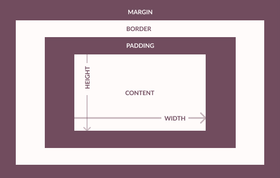

Structure, Phrasing and Display
Block elements are used to create larger structures, take up the full width avaliable and by default begin on new lines. Inline elements only take up as much width as necessary and do not start a new line by default.
The main different display properties in CSS include none, inline, block, and inline-block. Block and inline are defined above, affecting the indentation and width of an element. In addition there is inline-block where an element is formatted as an inline element but can have height and width values applied to it. Other key displays also include flex which places elements in a flex container, grid which places elements in a block-level grid container, and table.
Box Model
The CSS block model is essentially a box that wraps around each HTML element. From outside in, this includes the marin (gap before/outside an element), border (border around an element), padding (gap inside an element), and a specified width and height. The box-sizing property determines how the total width and height of an element is calculated, for example, whether they include the padding/borders or not.

Background Images
You can load an image using the image tag when it is part of the content rather than the design. This is used n most cases, like diagrams, logos, or headshots. A good guideline is when you expect people to print the page and you want the image to show up,or when you want it to be indexed by the search engine or has an essential semantic meaning.